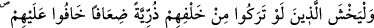
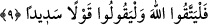
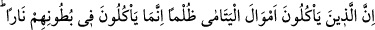
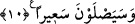

rızıklandırın. Bu kişileri irşâd, hak yola teşvîk, Hakk’ı talebe rağbet ettirmek, Hakk’a
teveccüh, ve dünyadan yüz çevirmek Allah katında dünyanın hiç bir değerinin
bulunmadığını, dünya ehlinin hüsrâna uğrayacaklarını, ehlullahın ise iki dünyada aziz,
iki menzilde de son derece mutlu olacaklarını bildirmek husûsunda “onlara güzel söz
söyleyin.”
Buna sen de vâkıf olduysan hakîkat mîrasından ve ma’rifet nasibinden mahrum
kalmamak için çok çalış! Şu söz ne güzel söylenmiştir:
Mîrâsına tâlip isen babanın ilmini öğren,
Babanın malını harcamak için on gündür süren.
Allah Teâlâ cümlemize bu hallerin semeresini nasîb eylesin. Cümlemizi iç dünyâmızı
(bâtını) arındırıp tasfiye, kalbimizi ıslâha ulaştırsın.
9- Geriye eli ermez, gücü yetmez çocuklar bıraktıkları takdirde (halleri ne olur)
diye korkacak olanlar (yetimlere haksızlık etmekten) korkup titresinler; Allah’tan
sakınsınlar ve doğru söz söylesinler.
Bunlardan maksad, vasîlerdir ki onlara kendi çocuklarını âciz bırakmış olsalar onlar
için nasıl endişe eder ve şefkat duyarlarsa aynı şekilde kucaklarındaki yetimler
hakkında Allah’tan korkup üzerlerine titremeleri emredilmektedir. Kendileri hakkında
böyle bir ihtimâli düşünüp taşınırlarsa şefkat ve acıma hisleri hilâfına bir şey yapmaya
cesâret edemezler.
Başkalarının çocukları hakkında “Allah’tan sakınsınlar ve doğru söz söylesinler.”
Yâni, kendi çocuklarına şefkat, güzel bir edep ve samîmiyetle hitâb ettikleri gibi
yetimlere hitâb etsinler. “Yavrum, evlâdım” diye çağırsınlar ve onları incitmesinler.
10- Haksızlıkla yetimlerin mallarını yiyenler şüphesiz karınlarına ancak ateş
tıkınmış olurlar; zaten onlar alevlenmiş ateşe gireceklerdir.
“Zulüm ile, zâlimce yetimlerin mallarını yiyenler” den maksat kötü velî ve
kadılardır. Yetim malı yemek, “zulüm ile” ifadesiyle kayıtlanmıştır; çünkü ihtiyaç
hâlinde iyilikle yâhut yetim malıyla ilgilendiği kadar hâkimin belirlediği ölçüde yiyen